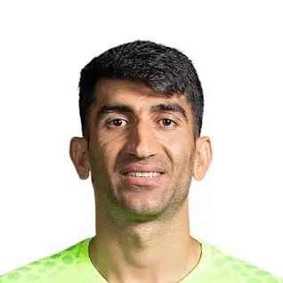
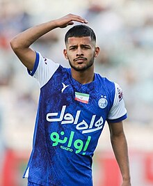

علیرضا صفر بیرانوند (زادهٔ ۳۰ شهریور ۱۳۷۱ در لرستان) بازیکن فوتبال اهل ایران است که در پست دروازهبان برای باشگاه فوتبال پرسپولیس در لیگ برتر خلیج فارس و تیم ملی فوتبال ایران بازی میکند. بیشتر...
علیرضا بیرانوند
دروازه بان
علیرضا صفر بیرانوند (زادهٔ ۳۰ شهریور ۱۳۷۱ در لرستان) بازیکن فوتبال اهل ایران است که در پست دروازهبان برای باشگاه فوتبال پرسپولیس در لیگ برتر خلیج فارس و تیم ملی فوتبال ایران بازی میکند. بیشتر...
.webp)
میلاد محمدی
مدافع
میلاد محمدی (زادهٔ ۷ مهر ۱۳۷۲) بازیکن فوتبال اهل ایران است که در پست دفاع چپ برای باشگاه آدانا دمیرسپور در سوپر لیگ ترکیه و تیم ملی ایران بازی میکند. وی برادر دوقلو مهرداد محمدی بازیکن باشگاه استقلال است. بیشتر...

مهدی قایدی (زادهٔ ۱۴ آذر ۱۳۷۷) بازیکن فوتبال اهل ایران است که در پست وینگر به صورت قرضی برای باشگاه فوتبال الاتحاد کلبا در لیگ برتر امارات متحده عربی بازی میکند. بیشتر...
مهدی قائدی
بازیکن میانی
مهدی قایدی (زادهٔ ۱۴ آذر ۱۳۷۷) بازیکن فوتبال اهل ایران است که در پست وینگر به صورت قرضی برای باشگاه فوتبال الاتحاد کلبا در لیگ برتر امارات متحده عربی بازی میکند. بیشتر...

مهدی ترابی
بازیکن میانی
مهدی ترابی (زادهٔ ۱۹ شهریور ۱۳۷۳؛ کرج) بازیکن فوتبال اهل ایران است که در پست وینگر و هافبک کناری برای باشگاه فوتبال پرسپولیس در لیگ برتر خلیج فارس بازی میکند. بیشتر...
مهدی طارمی
مهاجم
مهدی طارمی (زادهٔ ۲۷ تیر ۱۳۷۱) بازیکن فوتبال اهل ایران است که در پست مهاجم برای باشگاه فوتبال پرتو در لیگ برتر فوتبال پرتغال و تیم ملی ایران بازی میکند. بیشتر...

سردار آزمون
مهاجم
سردار آزمون (زادهٔ ۱۱ دی ۱۳۷۳) بازیکن فوتبال اهل ایران است که در پست مهاجم به صورت قرضی برای باشگاه آ.اس. رم بازی میکند. بیشتر...